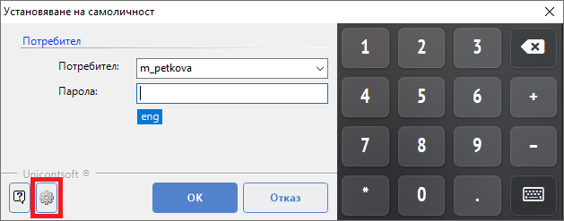
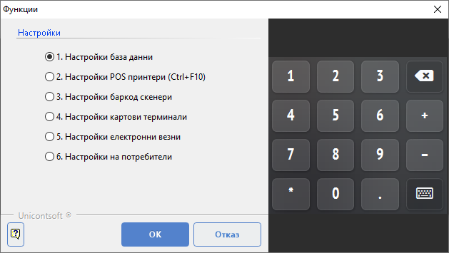
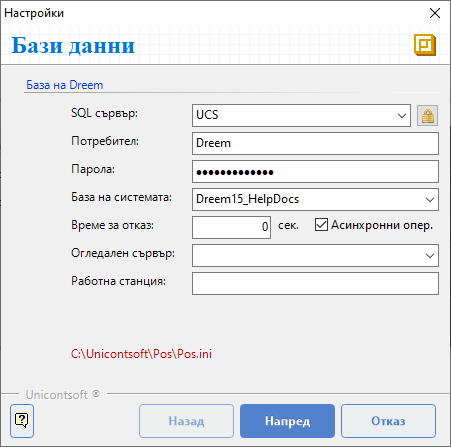
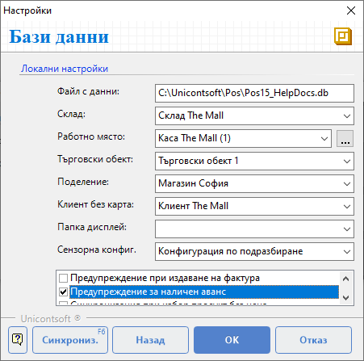
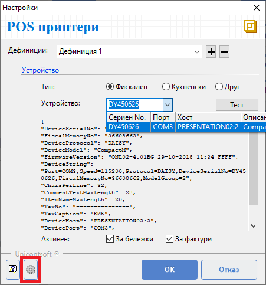
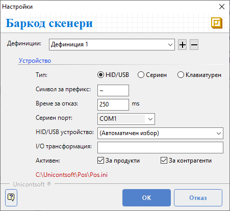

Фронтофис система#
Настройките на POS терминала включват създаване на връзка с:
База данни;
Фискален принтер;
Баркод скенер;
Стандартно тези настройки се извършват еднократно от администратор при инсталиране на Dreem POS.
База данни и локални настройки#
Настройката за връзка с базата данни зависи от изданието на системата.
Локалните настройки се конфигурират спрямо предварително избраната схема на работа. В общия случай за всеки обект предварително са дефинирани собствени склад, каса и обект в бекофис системата Dreem ERP.
Достъпва се функция Настройки от форма Установяване на самоличност или чрез бутон [Функции] на основния екран на Dreem POS.

Това отваря форма Функции. Избира се опция Настройки база данни.

На първия екран База данни се намират настройки за достъп до базата на Dreem ERP. Те са специфични и могат да бъдат локални или връзки за отдалечен достъп.

Чрез бутони [Назад] и [Напред] се преминава към предходен или следващ екран с настройки.
С бутон [Отказ] настройките могат да бъдат отхвърлени.
Вторият екран Бази данни съдържа опции за локални настройки.
Тук се посочва път до локалната база Dreem POS, в която се съхраняват регистрираните продажби.
Избира се Склад, от който ще се изписват продадените стоки.
В Работно място се определя касата, в която се регистрират всички движения на парични средства в брой. Това включва приемане на плащания в брой, сторно операции, служебно въвеждане и извеждане.
Чрез избор на Обект се указва за кой от обектите на организацията се генерират документи. Обектът определя номерацията на документи според настройките в Номератори.
При опцията Клиент без карта задължително се избира специално настроен контрагент за клиент на дребно.

С поставяне/махане на отметка могат да се активират/деактивират някои допълнителни настройки:
Предупреждение при издаване на фактура - Извежда съобщение при приключване на продажба с фактура, което изисква потвърждение от оператора за извършване на операцията.
Предупреждение за наличен аванс - Системата сигнализира за неусвоен аванс на клиента при приключване на продажба.
Синхронизация при избор продукт без цена - Системата автоматично ще синхронизира с Dreem ERP продуктите, ако операторът избере продукт без цена.
Плащане през реда за добавяне на нов продукт - Позволява регистриране на плащане в брой от реда за добавяне на нов продукт. В реда се изписва получената сума и с [Enter] продажбата се приключва.
Когато опцията е активирана, за добавянето на нов продукт се използва клавиш [+].Запомняне последен потребител - Във форма Установяване на самоличност предлага потребителя, който последен е достъпвал системата.
Звуков сигнал при маркиране - Регистрира маркирането на продукт, клиентска карта или др. баркод със звуков сигнал.
Бутон [Синхрон.] стартира синхронизация на номенклатури, наличности и настройки с бекофис системата Dreem ERP.
При необходимост от връщане на предходен екран на формата се използва бутон [Назад].
Чрез бутони [Ok] или [Отказ] настройките могат да бъдат потвърдени или отхвърлени.
Фискален принтер#
От Функции » Настройки » Настройки POS принтери се отваря форма за конфигуриране настройките на фискалното устройство.
Tip
Системата позволява един фискален принтер (ФП) да се споделя от няколко терминала. Предварително фискалното устройство трябва да бъде споделено от терминала, за който физически е закачен серийният порт. За останалите терминали се настройва мрежови ФП, като се указва връзка през терминала, на който ФП е закачен физически.

При успешно свързване фискалният принтер се визуализира в падащия списък от поле Устройство и може да бъде избран. Автоматично се показват данните за намерените активни устройства - Сериен No., Порт, Хост, Описание.
Връзката с фискален принтер може да изисква активиране на режим Продажби, опция за връзка с PC, инсталиране на драйвер за емулация на сериен порт или друго.
Чрез бутон [Настройки] се отваря форма за програмиране на ФП. Могат да се въведат имена на оператори, да се променят много други системни настройки по фискалния принтер - име, адрес и т.н.
След избор на ФП се извършва тест на връзката чрез бутона [Тест].
Чрез бутони [Ok] или [Отказ] настройките могат да бъдат потвърдени или отхвърлени.
Баркод скенер#
От Функции » Настройки » Настройки баркод скенери се отваря форма за конфигуриране настройките на баркод скенера. Те указват дали се използва клавиатурен скенер (в това число USB устройства) или сериен баркод скенер.

За оптимална работа на клавиатурните устройства е желателно скенерът да се настрои да изпраща префиксен символ. По подразбиране се очаква той да е ~ (тилда). Задължително след баркода скенерът трябва да изпраща символ за нов ред.
Tip
За програмиране на скенери може да се разгледа ръководството от производителя.